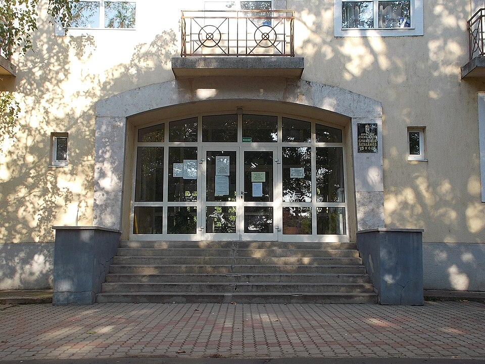

학교 현관의 안내문 (이미지) · 사진: Globetrotter19 / Wikimedia Commons, CC BY-SA 3.0
국제학교 학부모회(PTA)와 학교 커뮤니티 — 들어가야 하나, 무엇을 얻고 무엇은 못 얻나
1. 이름부터 다릅니다 — PTA · PTO · Parents Association
학교마다 부르는 이름이 다릅니다. PTA(Parent Teacher Association), PTO(Parent Teacher Organization), Parents Association, Parent Community, 학부모 자원봉사단(Volunteer Programme) 같은 이름을 씁니다. 이름이 다르면 교사가 구성원으로 들어가는지, 학교 조직의 일부인지 별도 단체인지도 달라집니다. 그래서 다른 학교 학부모에게 들은 이야기가 우리 학교에 그대로 적용되지 않습니다.
하는 일은 대체로 네 갈래로 나뉩니다.
· ① 학교와 가정 사이의 전달 — 학사 일정 안내, 설명회 준비, 의견 수렴
· ② 행사와 모금 — 국제의 날·축제·중고 장터·졸업 행사 등
· ③ 학년·반 단위 연락 — 반 대표(class parent) 역할, 단체 연락망 관리
· ④ 새로 온 가정 돕기 — 입학 첫 해 가정을 기존 가정과 짝지어 주는 제도(학교에 따라 운영)
※ 조직 이름·구성·회비 여부·운영 방식은 학교마다 다르고 해마다 바뀝니다. 이 글은 일반적인 구조를 정리한 것이니, 구체적인 사항은 그해 학교 안내문을 확인하시기 바랍니다.
2. 한국 학교 학부모회와 무엇이 다른가
| 항목 | 한국 학교에서 흔한 모습 | 국제학교에서 흔한 모습 |
|---|---|---|
| 가입 | 학년 초 선출·추천이 중심 | 재학생 가정이면 대체로 자동 소속, 활동은 자원 |
| 주된 활동 | 학교 지원·행사 보조 | 행사 운영과 커뮤니티 연결의 비중이 큼 |
| 모금 | 비교적 제한적 | 행사·장터 수익을 모아 쓰는 구조가 흔함 |
| 언어 | 한국어 | 영어가 기본, 국가별 모임이 따로 있는 경우가 많음 |
| 시간대 | 방과 후·저녁이 많음 | 등교 직후 오전 모임이 많아 맞벌이 가정은 참여가 어려움 |
| 성적과의 관계 | 관계없음(원칙) | 관계없음 — 그리고 분리 운영이 명시된 경우가 많음 |
마지막 줄이 이 글에서 가장 중요합니다. 참여를 많이 한다고 아이 성적이 좋아지지 않습니다. 교사가 매기는 평가와 학부모 활동은 분리해 운영하는 것이 기본 원칙이고, 그 점을 안내문에 적어 두는 학교도 많습니다. 반대로 참여하지 않는다고 불이익을 주지도 않습니다.
3. 그러면 무엇을 얻나 — 공식 안내문에 없는 것들
실익은 분명히 있습니다. 다만 그 실익은 "학교가 보내지 않는 정보" 쪽에 있습니다.
· 생활 정보 — 생일 모임 관행, 방과후 활동 신청 경쟁, 통학 노선의 실제 소요 시간, 병원·치과, 이사 업체
· 시기 감각 — 원서·재등록·과목 신청이 "대략 언제쯤" 몰리는지. 공식 날짜는 학교가 주지만 체감 분위기는 모임에서 옵니다 → 재등록 · 과목 신청
· 번역되지 않는 맥락 — 안내문 한 줄이 실제로 무엇을 요구하는지. 특히 현장학습·캠프, 그룹 프로젝트 준비물 같은 대목
· 아이의 친구 관계 — 특히 초등 구간에서는 학부모 연락망이 사실상 아이의 사회생활과 연결됩니다
📌 가장 효율이 좋은 참여 방식 — 임원을 맡는 것이 아니라 ① 연락망에 이름을 올려 두고 ② 학기 초 한두 행사에만 얼굴을 비치는 정도입니다. 이 정도로도 위의 정보는 거의 들어옵니다. 시간을 더 쓰실 여력이 있다면 반 단위 역할이 학년 전체 임원보다 부담이 적고 정보는 더 가깝습니다.
4. 주재원 가정이 놓치는 다섯 가지
· ① 한국인 모임에만 머무릅니다. 편하지만 학교 공식 소식이 한 다리 건너 늦게 도착합니다. 두 곳 모두에 이름을 올려 두세요.
· ② 첫 학기를 그냥 보냅니다. 연락망은 학기 초에 한 번 돌고 그 뒤로는 새로 들어가기가 어색해집니다.
· ③ 모임에서 들은 말을 학교 안내로 착각합니다. 마감일·준비물은 반드시 학교 공식 경로에서 다시 확인하세요 → 학습 플랫폼 읽는 법
· ④ 아이 이야기를 모임에서 꺼냅니다. 성적·반 배정·교사에 대한 이야기는 모임이 처리할 수 있는 사안이 아니고, 아이에 관한 말만 퍼집니다.
· ⑤ 귀국이 정해진 뒤에야 연락망에서 나옵니다. 떠나는 가정이 남기는 정보(집·차·가구·학교 서류)는 다음 가정에 큰 도움이 됩니다. 받은 만큼 남기고 가시면 좋습니다.
⚠️ 통로를 구분하세요 — 성적·수업 이야기는 과목 교사에게, 생활과 전반적인 적응 이야기는 어드바이저나 학년 담당 교사에게 메일로 묻는 것이 바른 통로입니다. 학부모회 임원에게 말해도 전달되지 않습니다. 누가 무엇을 맡는지는 담임·어드바이저 안내에, 상담에서 무엇을 물을지는 학부모 상담 준비법에 정리해 두었습니다.
5. 학기 초에 할 네 단계
· ① 이름과 경로를 적습니다. 우리 학교 학부모 조직의 정식 이름, 소식이 오는 경로(학교 메일인지 별도 앱인지), 담당자 한 명.
· ② 연락망에 들어갑니다. 학년 단위와 반 단위가 따로 있으면 둘 다. 한국인 모임이 있다면 함께.
· ③ 학기 초 행사 하나를 달력에 찍습니다. 보통 개학 직후 환영 행사나 학년 설명회입니다. 이 한 번이 이후 1년을 편하게 만듭니다.
· ④ 아이에게 맞는 선을 정합니다. 고학년이 될수록 아이는 부모가 학교에 자주 오는 것을 부담스러워합니다. 중등부터는 연락망만 유지하고 행사 참여는 줄이는 편이 자연스럽습니다.
마지막으로 공부 쪽 한 가지만 덧붙이겠습니다. 모임에서 "그 학년에 무엇이 어렵더라"는 이야기를 들으셨다면, 그것은 소문이 아니라 신호인 경우가 많습니다. 같은 학년 아이들이 같은 지점에서 막히는 이유는 그 구간에 평가 방식이 바뀌기 때문입니다. 그럴 때는 학기 중반에 점수가 나온 뒤가 아니라 그 구간이 시작되기 전에 한 번 손대는 쪽이 효율이 좋습니다. → 형성평가·총괄평가 · 숙제·과제 관리
관련 검색어: 국제학교학부모회 · 국제학교PTA · 주재원학부모모임 · 국제학교학부모커뮤니티
정리
국제학교의 학부모회는 성적에 영향을 주는 통로가 아닙니다. 참여해도 점수가 오르지 않고, 참여하지 않아도 불이익이 없습니다. 실익은 학교가 보내지 않는 정보(생활 정보·시기 감각·안내문의 맥락·아이의 친구 관계) 쪽에 있습니다. 그래서 권해 드리는 선은 임원이 아니라 연락망 + 학기 초 행사 한두 번입니다. 그리고 성적과 수업 이야기는 모임이 아니라 교사에게 가야 합니다. 아이가 어느 구간에서 막히고 있는지 궁금하시면 30분 무료 수업으로 현재 위치부터 확인해 보시기 바랍니다. (조직 이름·구성·운영 방식은 학교마다 다르고 해마다 바뀌니 그해 학교 안내를 직접 확인하세요.)